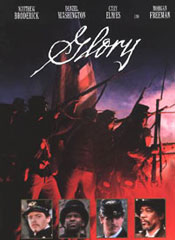

|

|

|
Year of Release: 1989
Cast: Matthew Broderick as Colonel Robert Gould
Shaw, Denzel Washington as Private Trip, Cary Elwes as Major
Cabot Forbes, Morgan Freeman as Sergeant Major John Rawlins,
Jihmi Kennedy as Private Jupiter Sharts, Andre Braugher as
Corporal Thomas Searles
Key People Behind the Scenes: Directed by Edward
Zwick. Written by Kevin Jarre based on the books of Lincoln
Kirstein and Peter Burchard and the letters of Robert Gould
Shaw. Produced by Freddie Fields.
Setting: Massachusetts and South Carolina
Plot Summary: The Civil War's best-known
African-American unit is recruited, trained, and gets its
first taste of combat before participating in a famous
assault on Fort Wagner.
Point of View: Union. Although the film is about a
black regiment, is is largely told from the perspective of
its white commander.
Critics' Response: The film was widely praised for
its message, its production design, and its performances,
particularly that of eventual Academy Award winner Denzel
Washington. Some critics, notably Roger Ebert, decried the
racial politics of the film, arguing that the focus should
not have been on Robert Gould Shaw.
Awards: Five Academy Awards nominations, and three
wins, for cinematography, supporting actor, and sound. The
film also won a Grammy for its theme.
Historians' Response: Many historians have pointed
out that the movie is incorrect in many details, and that
what is presented in the film is much more true for an
average African-American unit rather than for the
showcase Massachusetts 54th. However, most have been willing to
overlook these issues because of the film's success in
bringing an important story to a mass audience.
Budget: $18,000,000 ($31,923,000 in current dollars).
Box Office Gross: $26,830,000 ($48,002,000 in current dollars).
Source: Christopher Bates for the History 139A website
|